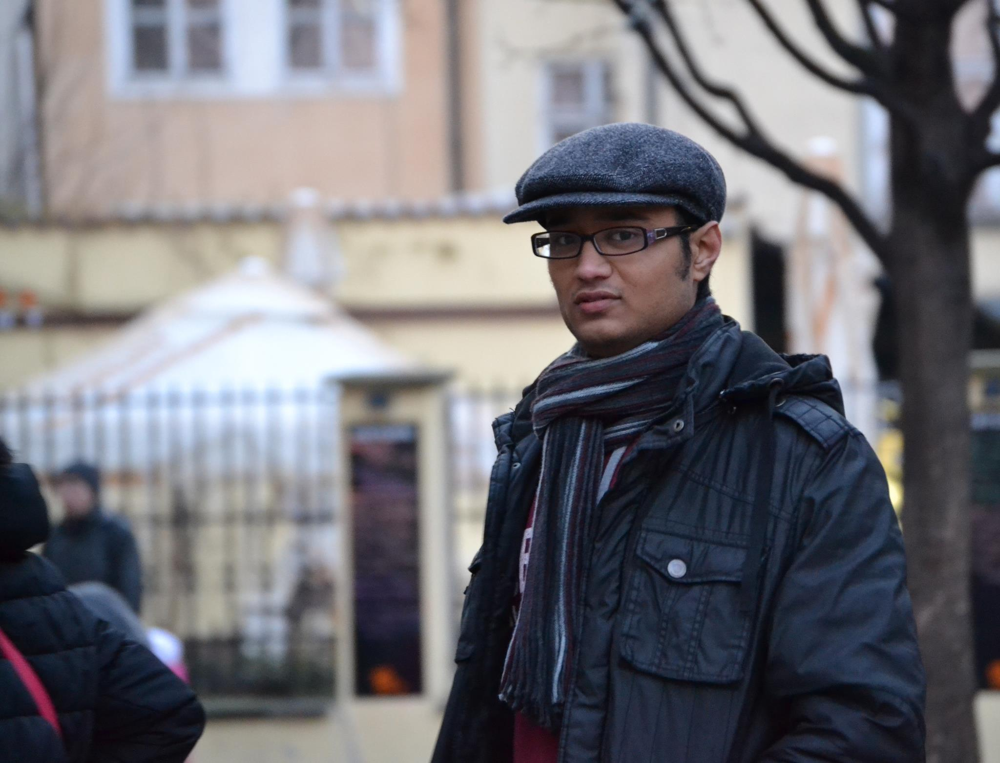

|  |
प्रणव कृष्णा साकुळकर Contact Information: |
About meI am a PhD candidate working under Prof. Bhaskar Krishnamachari in the Department of Electrical Engineering at the University of Southern California. Before joining USC, I received my B.Tech. in Electrical Engineering from the Indian Institute of Technology Kanpur and M.Sc. in Communications Engineering from RWTH Aachen University. |
Research InterestsDesign and analysis of algorithms for making decision under uncertainity, especially for online learning in bandit problems. |
Stochastic Contextual BanditsAt USC, I am working on the applications of stochastic contextual bandits in wireless networks. In sequential decision making problems in wireless networks, the availabe side-information such as the harvested power (in energy harvesting communications), the features of the jobs to be offloaded (in computational offloading), or the queue length (in data scheduling) can be used as context to make the online scheduling decisions. Following papers focus on online learning for these problems with known reward functions.Related Publications:
|
Previous Research at RWTH Aachen UniversityFor the master thesis, I worked the problem of I/Q imbalance in physical layer communications, particularly in SC-FDMA systems which are used in LTE uplink.Related Publications:
|
Undergraduate ResearchI worked on cooperative spectrum sensing in cognitive radio for my final year B. Tech. project and on blind speech separation using independent component analysis (ICA) during my undergraduate internship at the University of Victoria under Prof. Driessen.Related Publications:
|
| Last updated: Tue Jan 10 2017 21:35:20 GMT-0800 (Pacific Standard Time) |